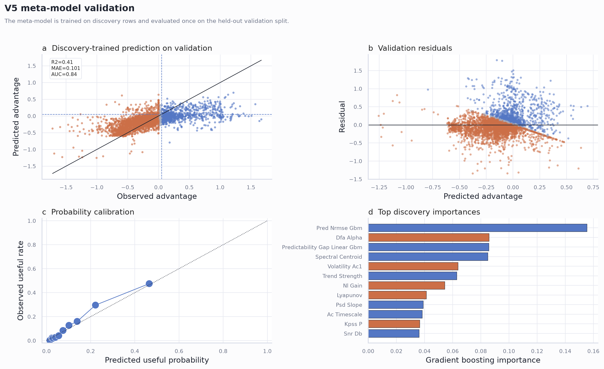

Dataset first
Every time series is summarized by 30 measured properties before the model decision is made.
A dataset-regime benchmark for deciding when quantum reservoir computing is worth testing against echo state networks.
QRC is not treated as universally better. The benchmark asks where it is empirically worth testing under a frozen, fair protocol.
Every time series is summarized by 30 measured properties before the model decision is made.
Three globally calibrated QRC variants are compared against a globally calibrated, feature-matched sparse leaky ESN.
The output is not a universal win claim. It is a map of where QRC evidence should be concentrated next.
All headline numbers come from the v5 publication package and a held-out validation split.
The public site does not upload private time series to a hosted backend. Researchers run the analyzer locally, paste or upload a CSV in their browser, and get a plain-language QRC priority signal.
git clone https://github.com/eybmits/qrc-dataset-profiler.git cd qrc-dataset-profiler pip install -e ".[dev]"
PYTHONPATH=src python -m qrc_dataset_profiler.run_triage_web --port 8765
http://127.0.0.1:8765
The figures show all validation points, the discovery-trained validation model, and family-level QRC-usefulness structure.



The paper PDF and summary table are bundled with this site for quick review.